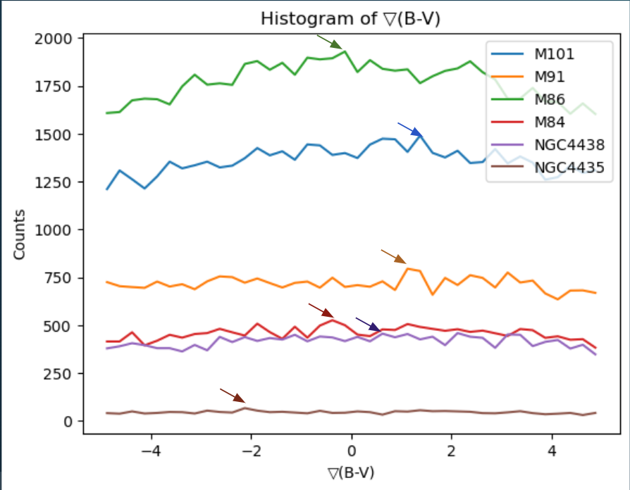
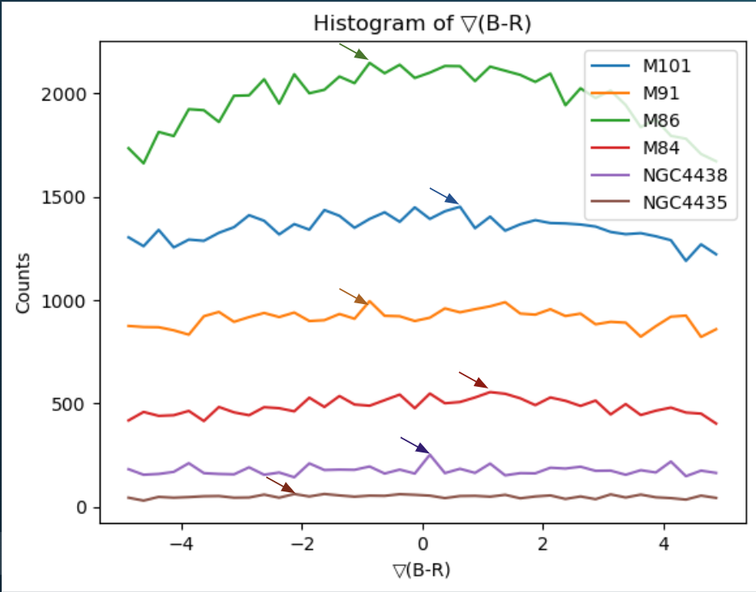
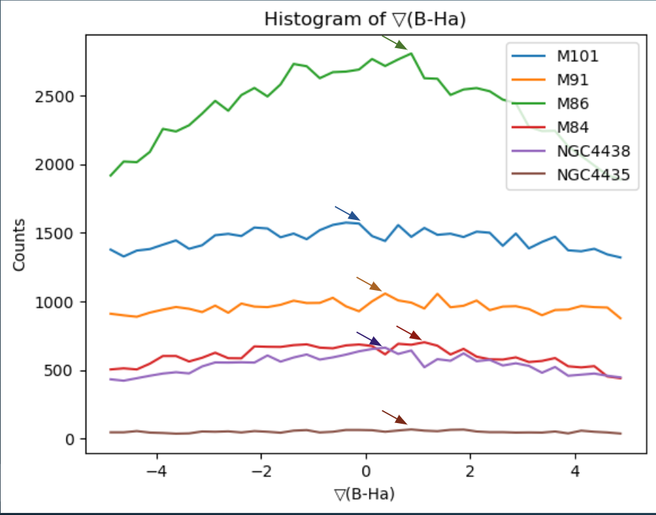

The images had to be cropped for every galaxy to the size of the galaxy in b-v, b-r, and b-hα.
| Object | NGC4438 | NGC4435 | M101 | M91 | M86 | M84 |
| Crop Size | 165x251 | 72x67 | 401x401 | 325x325 | 401x401 | 106x231 |
The images were then subtracted to create the b-v, b-r, and b-hα bandpasses. The IRAF program gradient was used to calculate the gradient of the band passes. The gradient, in this case, is the two dimensional derivative:
Finally, to create my histograms, I used imhist to listout values from z1=-5 to z2=5 with a binwidth=.25, and then graphed these values using Jupyter Notebook. I decided to graph count vs gradient instead of gradient vs radius as the shape of NGC4438 is no where near to circular. It's spiral-like wings makes calculating the gradient very difficult.
  
The counts are very different for each of the galaxies due to the individual cropping sizes. The cropping size changed based on the size of the object. The counts do not depend on the exposure times as they were normalized during the aligning process. Since I am only looking at the gradient, the different counts do not affect my analysis.
A positive gradient indicates that the first wavelength is increasing more than the second wavelength. A negative gradient indicates that the first wavelength is decreasing more than the second wavelength. However, the gradient does not indicate anything specific about the colors individually.
To have conclusive results, I would need to gather data from another galaxy in each category to be able to use a χ2 test to see if the gradient data is statistically significant. Thus, I am not able to accurately categorize NGC4438.
However, I still decided to speculate which line NGC4438 was most similar to for each bandpass. In the B-V gradient graph, the two spiral galaxies had maxima at a positive value, while the elliptical and lenticular galaxies had maxima at a negative value. NGC4438 had its maxima in the positive similar to the spiral galaxies. In the B-R and B-Hαgradient graphs, I was not really able to find a pattern like I did in the B-V gradient graph. Thus, I can speculate that NGC4438 may have stronger spiral characteristics than elliptical one, which can be seen by its wings, but I cannot make any conclusions.